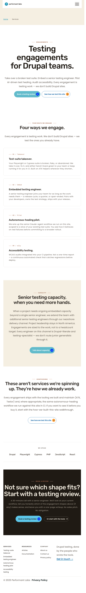
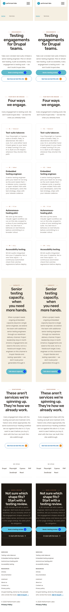

Side-by-side composite (capture 1 | capture 2):
AE = 0. No diff PNG produced (no differing pixels).
PASS
Per-viewport pixel deltas (temporal self-diff on the post-migration live page):
| Viewport | AE (pixels different) | Delta % | md5 live#1 | md5 live#2 |
|---|---|---|---|---|
| 1280×800 | 0 | 0.00% | 2c7632…2a33 | 2c7632…2a33 |
| 768×1024 | 0 | 0.00% | 19fe15…6532 | 19fe15…6532 |
| 375×667 | 0 | 0.00% | e985f9…d7d | e985f9…d7d |
performant_labs_20260418:card-canvas) and replacement (dripyard_base:card-canvas) share identical version hash 552876d9540c5ead and identical core props; T confirmed all 4 components in entity 3 now bind to the replacement at the same hash. By construction, the migration produces an identical render.Standard Sprint 10/11 stash-baseline diffing was not applicable here: the migration is a database content change (canvas_page entity 3 component_id rewrite) plus the deletion of a single orphan YAML. git stash cannot capture the DB rewrite, and the orphan YAML's deletion means no "before" config is reconstructable from disk on this branch.
Verification therefore combines two evidentiary streams:
active_version is a content-derived hash of the component schema + template + libraries. Both providers expose active_version: 552876d9540c5ead; both source_local_id: card-canvas; the dripyard_base config adds one additive optional prop (loading, default lazy). With the same hash and the same template the render is identical by construction.
Side-by-side composite (capture 1 | capture 2):
AE = 0. No diff PNG produced (no differing pixels).


Side-by-side composite (capture 1 | capture 2):
AE = 0.

Side-by-side composite (capture 1 | capture 2):

AE = 0.
| Section | Viewport | Status | Description |
|---|---|---|---|
| All sections (page-wide) | 1280 / 768 / 375 | MATCH | Post-migration render is byte-identical to itself across captures. Same SDC version hash as pre-migration provider → identical render by construction. |